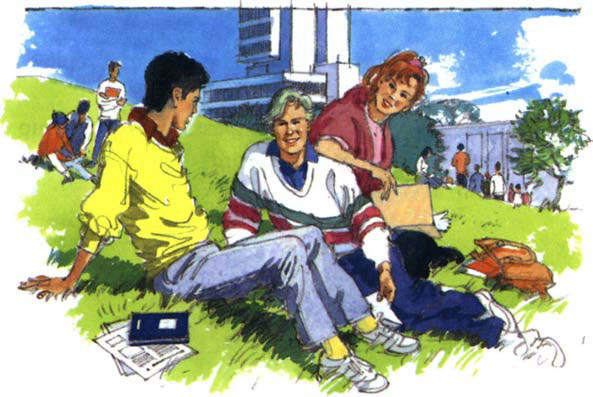
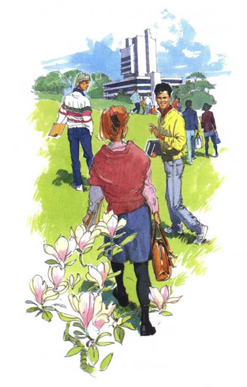
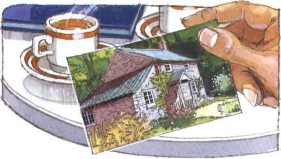
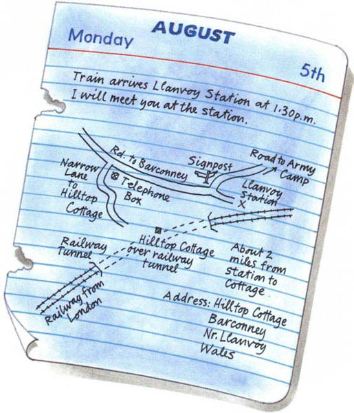
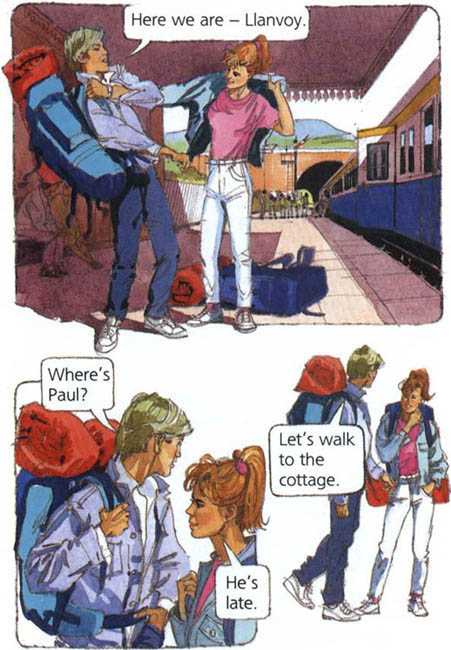
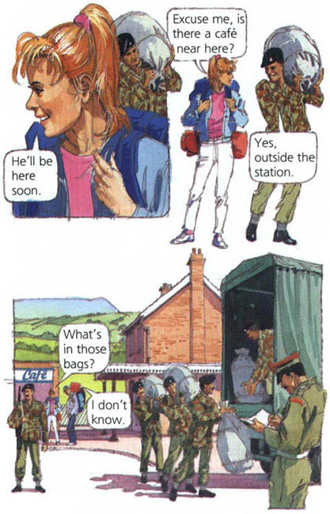

Listen to Part 1:
Tháng 5 là thời gian ôn thi tại các trường đại học ở Anh.
Paul đang nằm dài trên bãi cỏ trước hội trường thi. Sheila và Charles, bạn của Paul, đang ngồi cạnh anh.
Cả ba đều là sinh viên năm nhất khoa Ngữ văn Anh. Họ đang ở giữa thời gian diễn ra kỳ thi cuối năm. Paul và Charles năm nay 19 tuổi, trong khi Sheila kém một tuổi.
Kỳ thi tiếp theo sắp bắt đầu trong nửa giờ nữa. Nhưng thay vì ôn tập, ba sinh viên đang trò chuyện về kỳ nghỉ sắp tới của mình.

Sheila hỏi Paul: "Bạn định đi đâu vào mùa hè này?"
Paul trả lời: "Tôi sẽ đến xứ Wales. Tôi có một túp lều ở miền quê."
Charles hỏi: "Bạn có túp lều ở xứ Wales sao?"
Paul trả lời: "Không phải của tôi. Đó là của chú tôi. Mỗi mùa hè, chú tôi đều đến đó nghỉ mát. Nhưng năm nay, chú tôi sẽ đi Hy Lạp. Nên tôi sẽ ở trong túp lều của chú tôi suốt tháng 7 và tháng 8."
Paul hỏi: "Hai bạn định đi đâu vào kỳ nghỉ?"
Listen to Part 2:
Sheila trả lời: "Chúng tôi chưa biết. Chúng tôi vẫn chưa quyết định."
Paul nói: "Sao hai bạn không đến xứ Wales nhỉ? Hai bạn có thể ở cùng tôi một hoặc hai tuần."
Sheila hỏi Charles: "Bạn thấy thế nào?"
Tiếng chuông trường vang lên. Đã đến giờ để bắt đầu kỳ thi tiếp theo.
Charles trả lời: "Chúng ta tiếp tục nói chuyện sau kỳ thi. Đi thôi."
Các sinh viên đứng dậy khỏi bãi cỏ. Họ nhặt đồ đạc và vội vã tiến về phía hội trường thi.

Ba tiếng sau, kỳ thi cũng kết thúc. Paul, Sheila và Charles đang ngồi trong một quán cà phê.
Sheila hỏi Paul: "Túp lều của chú bạn thế nào?"
Paul rút một bức ảnh từ trong ví.
Listen to Part 3:

Sheila nói: "Ngôi nhà trông rất đẹp."
Paul đồng ý: "Rất đẹp. Nhưng rất hẻo lánh. Không có ngôi nhà nào gần đó. Và cũng không có điện và điện thoại."
Sheila nói với Charles: "Chúng ta hãy đi nghỉ với Paul đi."
Charles đồng ý: "Được thôi. Chúng ta có thể ở đó một tuần."
Ba sinh viên bắt đầu lên kế hoạch cho kỳ nghỉ ở xứ Wales.
Paul nói: "Hai bạn hãy đến vào ngày 5 tháng 8. Đó là thứ Hai. Chuyến tàu từ London đến ga Llanvoy sẽ đến vào 1 giờ 30 chiều."
Sheila hỏi: "Ga Llanvoy ở đâu?"
Paul trả lời: "Đó là một nhà ga nhỏ gần túp lều. Mọi chuyến tàu nhanh từ London đều dừng lại ở đó."
Charles hỏi: "Chúng ta đi từ nhà ga đến túp lều như thế nào?"
Listen to Part 4:
Paul nói: "Đây, mình sẽ vẽ một bản đồ. Đường ray xe lửa sẽ đi qua một đường hầm dài trước khi đến ga Llanvoy. Túp lều nằm trên một ngọn đồi nhìn ra đường hầm này."
Charles đưa cuốn nhật ký của mình cho Paul. Paul vẽ một bản đồ và viết địa chỉ cũng như tên của túp lều.
Paul nói: "Xong rồi. Nhưng đừng lo, mình sẽ đón hai bạn ở ga Llanvoy. Mình sẽ gặp các bạn vào thứ Hai, ngày 5 tháng 8, lúc 1 giờ 30 chiều."

Hôm nay là ngày 5 tháng 8. Sheila và Charles đang đi trên chuyến tàu đến ga Llanvoy ở xứ Wales.

